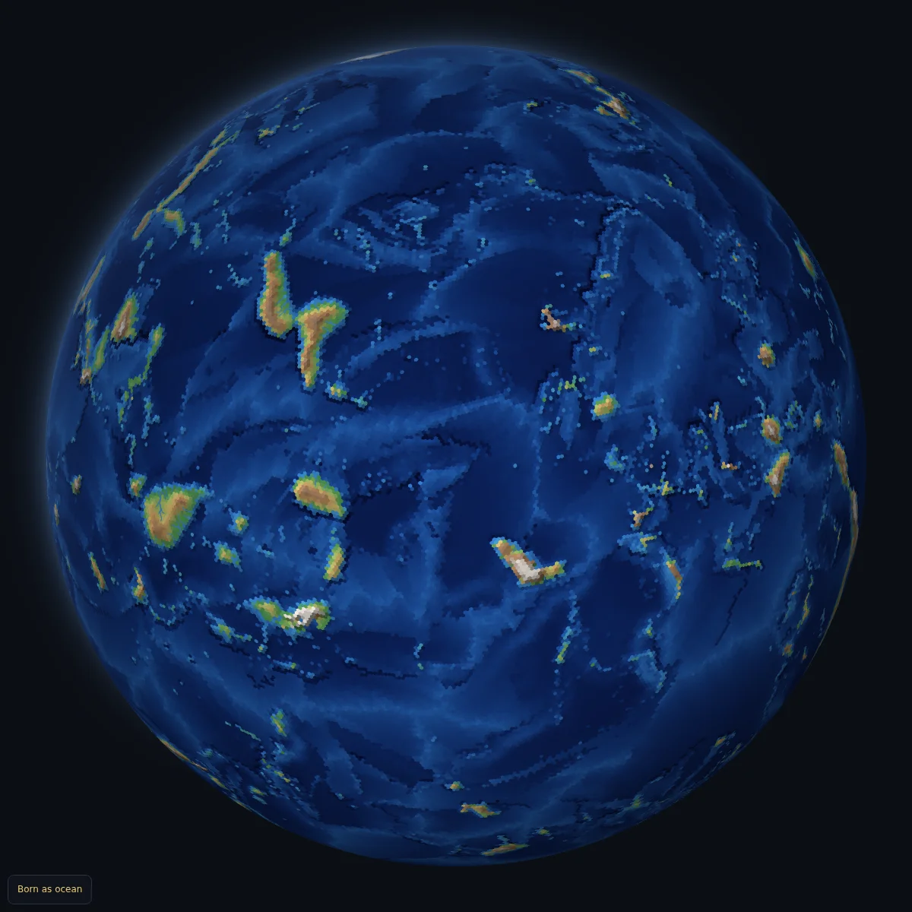

Welcome to my site – Anjaneya Workshop, the home of Planet and some of my other projects (updates to follow). I'm Jamie and I build with AI assistance on my projects.
The planet on this page is my main project. It is a simulated world the size of Earth, running day and night. It begins as ocean. Plates drift, volcanoes raise islands, islands join into continents, and rivers wear them down again. After its first moment, every mountain and coastline is the planet's own doing. Nothing is drawn by hand.
The aim is a world with a history nobody wrote: land first, then climate, plants, animals, and one day peoples. It is unfinished, and I change it in the open.